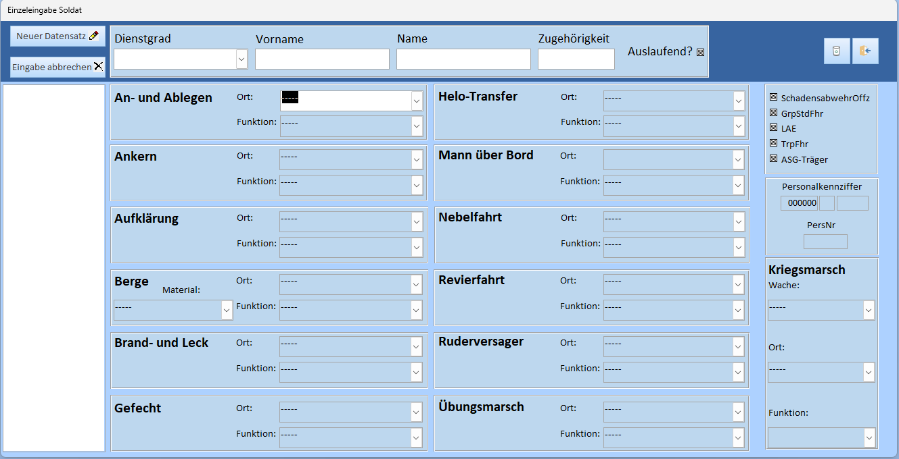
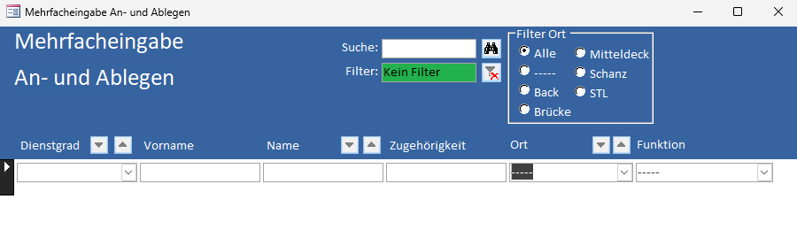
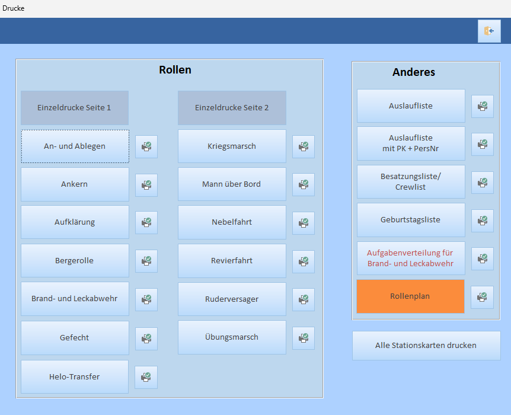
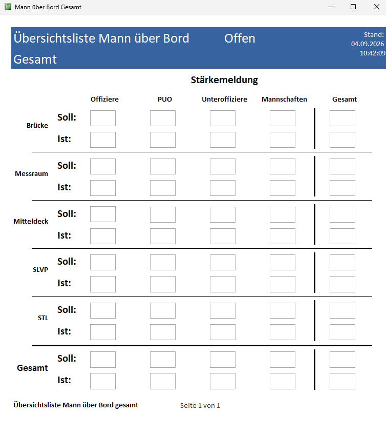

Das Problem
Sämtliche Stationen für eine gesamte Besatzung für verschiedene Situationen darzustellen, ist nicht einfach. Es muss unbedingt Doppeltbelegung oder das Übersehen einzelner Personen sichergestellt werden.
Die Lösung
Excel stößt hier an seine Grenzen, deswegen war dies mein erstes richtiges Access-Projekt.
Umsetzung
Zuerst musste ich mir über die Struktur klar werden. Wie hängen unterschiedliche Daten miteinander zusammen? Wie verhindere ich doppelte Datenerfassung? Wie stelle ich sicher, dass bei Änderungen überall Anpassungen gemacht werden, wo es nötig ist? All das vereint eine Datenbank sehr gut, weshalb ich mich tief mit Access befasst habe. Gerade die Arbeit mit Abfragen auf bestehende Daten und die Erstellung von Formularen war hier essentiell. Dass ich hier noch effizienter hätte arbeiten können, ist mir erst in einem späteren Projekt bewusst geworden. Da diese eine der Dateien ist, die vorwiegend von anderen Personen als von mir genutzt wird, war hier die enge Zusammenarbeit mit den Nutzern notwendig. Auch hier habe ich einige Zeit dafür aufgewendet, Rückmeldungen umzusetzen, Bugs zu beseitigen und alles so benutzerfreundlich wie möglich zu gestalten.
Screenshots





Technologien
- Access
- SQL
- VBA
Was ich dabei gelernt habe
- Entwerfen Datenbankstrukturen
- SQL-Abfragen
- Beachten und Kontrollieren von Datenintegrität
- Schnittstelle zwischen Access und Excel für Daten Ex- und Import
- Bugfixing
- Verarbeiten von Nutzerrückmeldungen